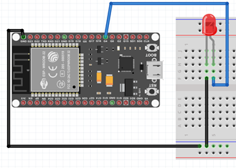

PANDUAN PRAKTIS
Mengontrol Relay / LED Realtime Melalui Web
Koneksi Database Aktif
1. Firebase Realtime Database
https://latihaniot-default-rtdb.firebaseio.com/
relay
└─ button1:
"OFF"
* Klik tombol Btn ON atau Btn OFF di area simulasi web untuk memperbarui data secara langsung!
2. Hasil Tampilan Web (Output)
index.html
* Menekan tombol akan mengirim status ("ON"/"OFF") ke Firebase dan memperbarui label status secara otomatis.
3. Kode Program Utuh (`index.html`)
index.html
// BLOK 1: Elemen Tombol
dan Status Web
<!DOCTYPE html> <html> <head> <title>BUTTON</title> </head> <body> <h1>Relay 1</h1> <button id="button1_on">Btn ON</button> <button id="button1_off">Btn OFF</button> <p>Status Relay 1: <span id="status_button1">OFF</span></p>
// BLOK 2: Mengambil
Library Firebase SDK
<script type="module"> import { initializeApp } from "https://www.gstatic.com/firebasejs/10.12.2/firebase-app.js"; import { getDatabase, ref, set, onValue } from "https://www.gstatic.com/firebasejs/10.12.2/firebase-database.js";
// BLOK 3: Pengaturan
Kredensial Firebase
// Ganti isi API_KEY dan databaseURL sesuai proyek Firebase kamu const firebaseConfig = { apiKey: "........", databaseURL: "........", projectId: "........" }; // Menghubungkan aplikasi web ke Firebase const app = initializeApp(firebaseConfig); const db = getDatabase(app);
// BLOK 4: Mengirim Perintah &
Mendengarkan Perubahan
// 1. Referensi jalur data relay di database const relayRef = ref(db, "relay/button1"); // 2. Ambil elemen tombol & span status dari DOM const btnOn = document.getElementById("button1_on"); const btnOff = document.getElementById("button1_off"); const statusText = document.getElementById("status_button1"); // 3. Event Listener Klik Tombol ON (Kirim "ON" ke Firebase) btnOn.addEventListener("click", () => { set(relayRef, "ON"); }); // 4. Event Listener Klik Tombol OFF (Kirim "OFF" ke Firebase) btnOff.addEventListener("click", () => { set(relayRef, "OFF"); }); // 5. Update tampilan status secara realtime setiap data berubah onValue(relayRef, (snapshot) => { const status = snapshot.val(); statusText.innerText = status ? status : "OFF"; });
// BLOK 5: Penutup Tag
</script> </body> </html>
Konsep Menulis Data (`set`)
pada Firebase JS SDK
Berbeda dengan membaca data yang menggunakan
onValue, fungsi set() digunakan untuk
mengirim/menulis ulang data pada jalur (path)
tertentu di Firebase. Ketika tombol diklik, pesan string
"ON" atau "OFF" dikirim langsung ke
cloud.
| Kategori / Baris Kode | Penjelasan Fungsi & Perannya |
|---|---|
| 1. Elemen Tampilan Web (HTML) | |
| <button id="button1_on">Btn ON</button> | Tombol kontrol untuk memicu perintah menyalakan relay/LED. |
| <span id="status_button1">OFF</span> | Kontainer penampung teks status relay saat ini yang akan diperbarui secara otomatis. |
| 2. Perintah Mengubah Data Firebase | |
| set(relayRef, "ON") |
Fungsi Firebase SDK untuk **menulis/mengganti** data di node
"relay/button1"
menjadi string
"ON".
|
| addEventListener("click", callback) | Event listener bawaan JavaScript untuk mendeteksi kapan elemen tombol diklik oleh pengguna. |
Skematik Hardware & Pengabelan ESP32 + Modul Relay / LED

Gambar: Rangkaian ESP32 & Modul Relay (GPIO 5)Tabel Koneksi Pinout:
| Pin Modul Relay | Pin ESP32 DevKit | Keterangan |
|---|---|---|
| VCC / (+) | 5V / VIN | Daya Relay (5V) |
| IN / Signal | GPIO 5 (G5) | Sinyal Kontrol Pemicu |
| GND / (-) | GND | Ground / Nol Volt |
Kode Program ESP32 Arduino IDE (`relay_firebase.ino`)
relay_firebase.ino | Arduino IDE 2.x
#include <WiFi.h> #include <Firebase_ESP_Client.h> // 1. KONFIGURASI WIFI & FIREBASE #define WIFI_SSID "........" #define WIFI_PASSWORD "........" #define DATABASE_URL "........" #define DATABASE_SECRET "........" // 2. KONFIGURASI PIN RELAY (GPIO 5) #define RELAY_PIN 5 FirebaseData fbdo; FirebaseAuth auth; FirebaseConfig config; void setup() { Serial.begin(115200); pinMode(RELAY_PIN, OUTPUT); digitalWrite(RELAY_PIN, LOW); // Matikan relay saat awal booting WiFi.begin(WIFI_SSID, WIFI_PASSWORD); Serial.print("Connecting to Wi-Fi"); while (WiFi.status() != WL_CONNECTED) { Serial.print("."); delay(300); } Serial.println("\nConnected!"); config.host = DATABASE_URL; config.signer.tokens.legacy_token = DATABASE_SECRET; Firebase.begin(&config, &auth); Firebase.reconnectWiFi(true); } void loop() { // Membaca status instruksi dari Firebase path: relay/button1 if (Firebase.RTDB.getString(&fbdo, "relay/button1")) { String status = fbdo.stringData(); if (status == "ON") { digitalWrite(RELAY_PIN, HIGH); // Nyalakan Relay Serial.println("Relay 1: ON"); } else { digitalWrite(RELAY_PIN, LOW); // Matikan Relay Serial.println("Relay 1: OFF"); } } delay(500); // Cek status setiap 0.5 detik }
| Potongan Kode Pokok | Penjelasan Fungsi & Perannya |
|---|---|
| pinMode(RELAY_PIN, OUTPUT) | Mengkonfigurasi pin GPIO 5 pada ESP32 agar bertindak sebagai pin keluaran pemicu sinyal kontrol relay/LED. |
| Firebase.RTDB.getString(&fbdo, "relay/button1") |
Fungsi utama ESP32 untuk
mengambil/membaca status teks ( string )
dari path
"relay/button1"
di database.
|
| digitalWrite(RELAY_PIN, HIGH / LOW) | Mengirimkan sinyal logika HIGH (3.3V) untuk menyalakan relay/LED atau LOW (0V) untuk mematikannya berdasarkan respon dari Firebase. |